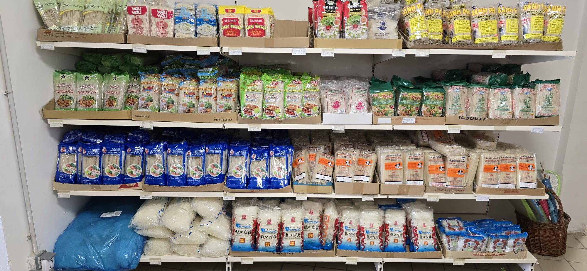
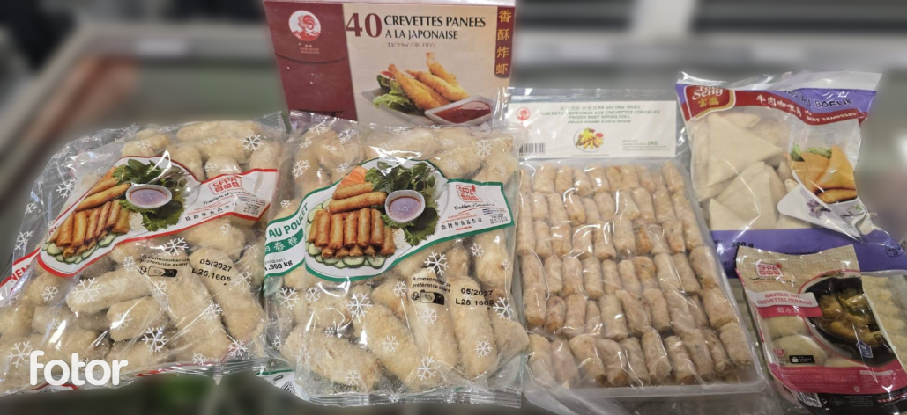

Nos rayons
Cliquez pour voir le contenu du rayon désiré :
Boissons - Retrouvez des sodas exclusifs, des jus à l’aloe vera, et même du Soju pour les amateurs de découvertes exotiques.
Divers – De nombreux produits à découvrir.
Épices – Épices du monde, condiments typiques, sauces piquantes.
Halal – Nems, viandes surgelées, produits certifiés halal pour cuisiner en toute confiance.
Spécialités Japonaises – Sauces japonaises, nouilles udon, soupes miso et produits typiques.
Riz et Poudres – Riz parfumé, riz gluant.
Nouilles Instantanées – Large choix de sachets de nouilles aux goûts variés, faciles à préparer et savoureux.
Nouilles Natures – Grand choix de nouilles et vermicelles de riz, blé.
Sauces – Sauces soja, huître, teriyaki.
Produits Frais - De nombreux produits frais pour préparer de bons plats.
Produits Congelés - Un très large choix de produits congelés passant du poulet, aux légumes, aux nems jusqu'au poisson.
Thé - Un large choix de thés asiatiques pour tous les goûts : vert, noir, oolong, jasmin ou infusions fruitées. En vrac ou en sachets, parfaits pour un moment de détente ou à offrir. (Non cliquable)
Vaisselle - De la vaisselle à ne plus savoir quoi en faire, des bols, des assiettes, des couteaux et des baguettes. Trouvez tout ce dont vous avez besoin.